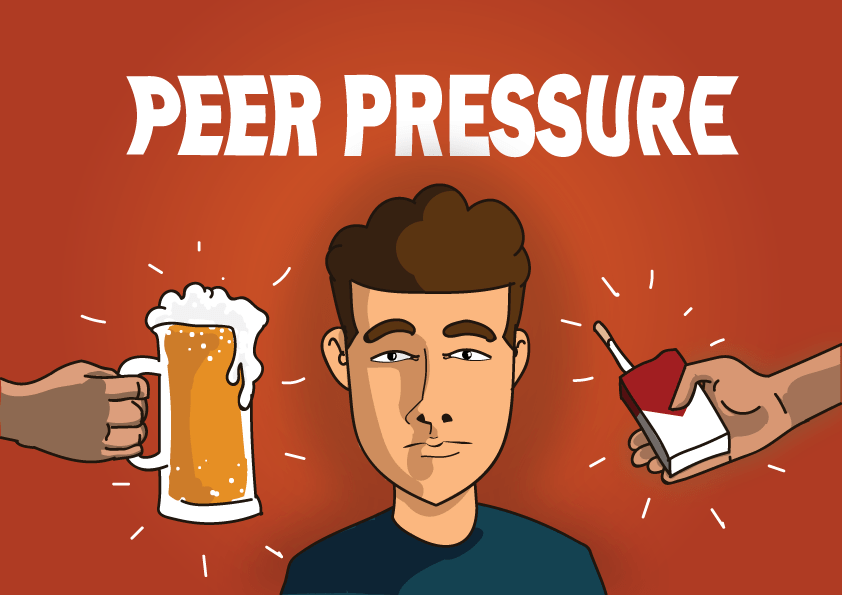
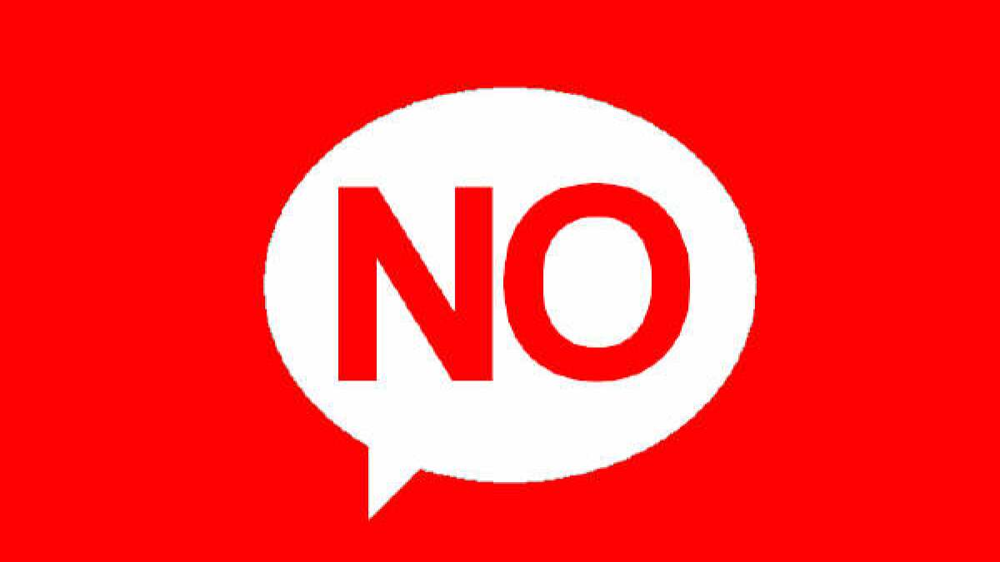
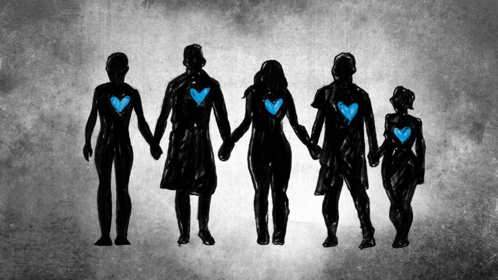
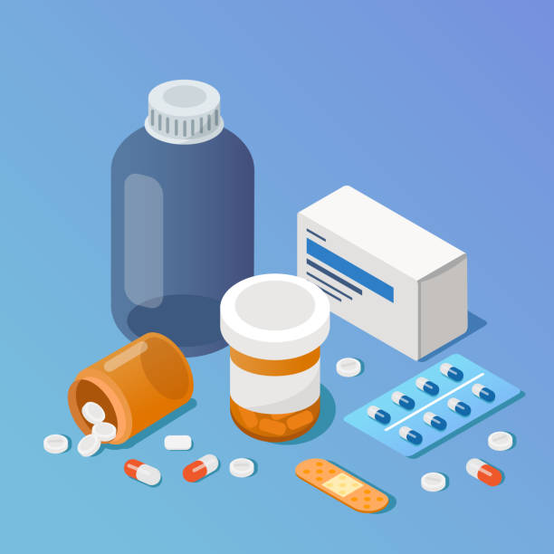
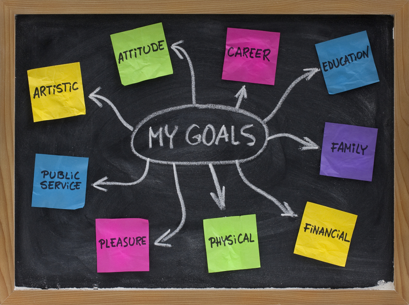

Overview
Alcoholism among college students is a growing concern. This site explores its causes, effects, and potential solutions while also providing resources for those who may be struggling with alcohol addiction.
Causes
Factors like peer pressure, stress, and the desire for social acceptance contribute to excessive drinking on campuses. Many fraternities have hazing and other methods that promote unsafe drinking.
Solutions
Here are some ways to ultimately fix the drinking problem:
- Lowering the drinking age: The legal drinking age can contribute to binge drinking among college students by creating a sense of restriction, leading to psychological reactance—where people rebel against perceived limits on their freedom. For example, closing a social lounge during finals might prompt students to defy the rule. Lowering the drinking age to 18 could reduce binge drinking, as seen in countries like Germany and Italy, where young adults are exposed to alcohol in responsible social settings. According to the NIAAA, these countries experience fewer binge-drinking issues, suggesting that earlier exposure fosters responsible drinking habits and reduces long-term health risks.
- Offering programs: Another way to address alcohol misuse is by offering programs that help college students cope with alcohol withdrawals and excessive binge drinking. For example, the University of Missouri (Mizzou) provides a wellbeing website where students can request support programs and access feedback on alcohol and drug use through a behavior profile. Therapists, psychiatrists, and specialists are also available on campus to assist students struggling with addiction and prevent self-harm or harm to others.
Effects
Alcoholism affects academic performance, health, and relationships, creating long-term challenges for students.
Understanding Peer Pressure
Peer pressure is one of the leading causes of alcohol consumption among college students. It's essential to recognize and resist negative influences. Understanding how to combat peer pressure is essential for having a safe college experience.
Here are 5 steps to combat peer pressure
1. Learn to Say No Confidently
Practice ways to decline offers without feeling guilty. For example:
- "No thanks, I’m good."
- "I have something important tomorrow, so I can’t."
A firm but polite refusal shows confidence and helps avoid further pressure.
2. Surround Yourself with Like-Minded People
Choose friends who respect your choices and share similar values. Having supportive friends can reduce the likelihood of encountering peer pressure.
3. Offer Alternatives

Suggest other activities instead of drinking or engaging in risky behavior:
- "Let’s grab some food instead!"
- "How about we watch a movie or play basketball?"
4. Have a Pre-Planned Excuse
Prepare an excuse ahead of time to avoid awkwardness:
- "I’m driving tonight."
- "I’m on medication and therefore I can’t drink."
5. Focus on Your Long-Term Goals
Remind yourself of your personal goals (academic, career, or fitness) and how risky behaviors might jeopardize them. Staying true to your priorities makes it easier to resist negative influences.
Statistics on Alcoholism
Here are some alarming statistics about alcohol consumption among college students:
- According to the National Institute on Alcohol Abuse and Alcoholism (NIAAA), Approximately 80% of college students drink alcohol.
- According to the Centers for Disease Control and Prevention (CDC), 50% of college students engage in binge drinking.
- According to the National Institute on Alcohol Abuse and Alcoholism (NIAAA), about 25% of students report academic consequences of their drinking, including missing class or falling behind.
- According to the Substance Abuse and Mental Health Services Administration (SAMHSA), 11% of college students report driving under the influence of alcohol.
- Alcohol-related deaths are a serious issue among U.S. youth. About 5% of alcohol poisoning deaths occur in people aged 15-24, including around 1,519 college students annually (Centers for Disease Control and Prevention, 2022, Kessler, 2015).